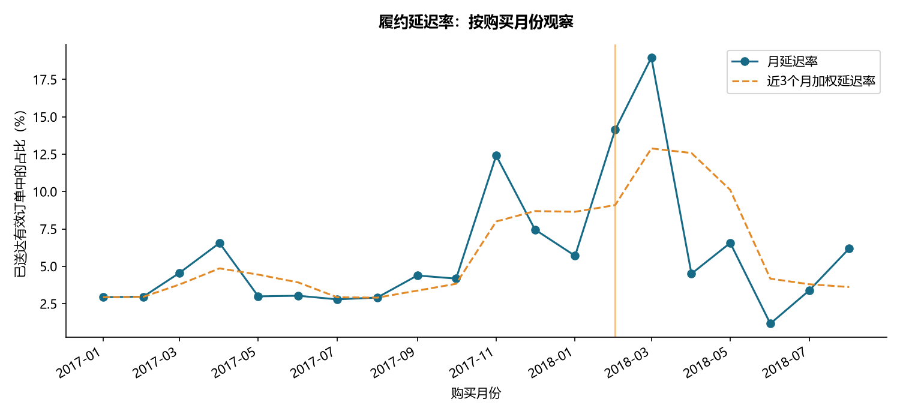
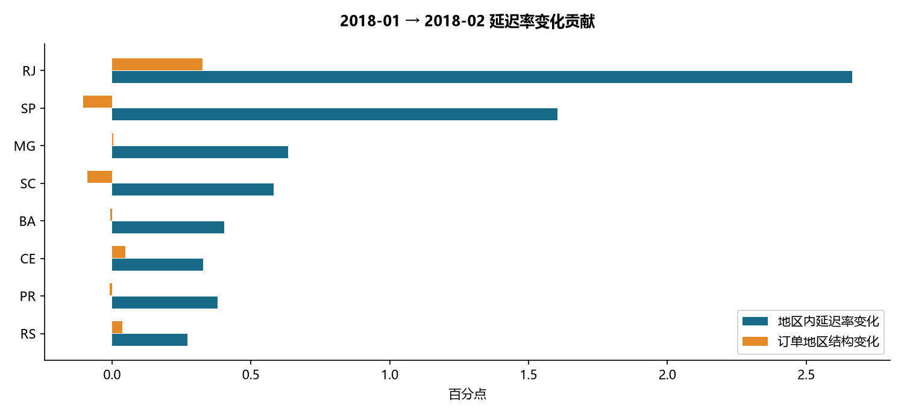
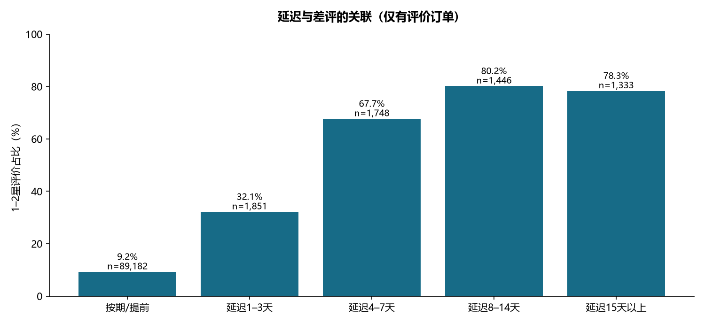

电商履约与客户体验诊断
完成日期：2026-10-23 · SQL + Python · 公开历史数据的回顾性诊断
业务结论
- 原始订单 99,441 笔，主分析纳入 96,203 笔 2017-01 至 2018-08 的有效已送达订单，延迟率 6.79%。
- 未聚合就连接商品明细与支付明细，会使匹配订单的商品金额高估 4.54%。已通过先聚合再关联修复，并与源表金额对账。
- 延迟订单差评率 62.42%，按期订单 9.25%，相差 53.17 个百分点。限制到送达当日或之后创建的评价，二者变为 25.11% 与 9.23%，说明评价时点影响很大。这些都是关联，不能推断改善配送一定带来同等幅度的评分提升。
- 最大月度恶化出现在 2018-01 → 2018-02：全样本延迟率上升 8.43 个百分点。共同地区样本分解中，地区内部变化贡献 8.15 个百分点，地区订单结构贡献 0.28 个百分点。
数据口径与质量
来源：Olist 发布页。原始 CSV、下载来源和 SHA256 见根目录 data_manifest.json；没有生成模拟业务数据。数据为 2016–2018 年历史数据，结论不代表当前 Olist 经营状况。
| total_orders |
delivered_status |
eligible_all_dates |
invalid_delivered |
no_review |
no_items |
no_payment |
amount_mismatch |
multi_seller_orders |
| 99441 |
96478 |
96470 |
8 |
768 |
775 |
1 |
260 |
1278 |
- 数据库加载订单、商品明细、支付、评价、客户、商品、商家、品类翻译 8 张表；地理坐标文件保留但未用于分析。
- 日期按原数据的无时区本地时间解析。延迟定义为实际送达日历日期晚于预计送达日，避免把当天午夜之后的送达都算延迟。
- 差评定义为 1–2 星；无评价不计为好评。一个订单只保留最后答复的评价（ROW_NUMBER），共折叠 551 条额外评价记录。时间并列按 review_id、源文件行号确定性排序。
- 商品金额不含运费；支付金额含运费且可能存在业务差异。误差大于 0.05 巴西雷亚尔的订单单独输出，未强行覆盖。两类金额与各自源表分别对账。
- 商家排查只使用单商家订单，至少 100 单；混合品类订单按商品金额最大的品类归类，仅供订单诊断。
- 全部 20 项断言通过；详细数值见 validation_checks.csv。金额例外见 payment_reconciliation_exceptions.csv。
原始订单状态：
| order_status |
orders |
| delivered |
96478 |
| shipped |
1107 |
| canceled |
625 |
| unavailable |
609 |
| invoiced |
314 |
| processing |
301 |
| created |
5 |
| approved |
2 |
主分析仅包含已送达订单，存在完成订单选择；取消/未送达订单不应据此视为正常履约。2018-09 后记录稀疏，排除整段尾部；月末订单仍可能受提取时点与送达状态筛选影响。缺少可信的数据快照日，不能宣称彻底消除了右删失。
指标异动：从总量到地区

选择规则在代码中固定为“相邻两月均不少于 1,000 单的最大延迟率正向变化”，属于探索性定位，未把筛选后的峰值当作独立显著性检验。
对共同覆盖的 27 个地区使用对称分解：地区内贡献 = 平均订单权重 × 延迟率变化；结构贡献 = 平均延迟率 × 权重变化。共同地区覆盖前月 100.00%、当月 100.00%。两项之和等于共同地区总变化（已断言核验）。

| state |
n0 |
n1 |
r0 |
r1 |
within_effect |
mix_effect |
| RJ |
850 |
879 |
0.1306 |
0.3402 |
0.0267 |
0.0033 |
| SP |
2975 |
2632 |
0.0343 |
0.0733 |
0.0161 |
-0.0010 |
| MG |
846 |
790 |
0.0307 |
0.0835 |
0.0063 |
0.0000 |
| SC |
311 |
254 |
0.0997 |
0.2402 |
0.0058 |
-0.0009 |
| BA |
228 |
208 |
0.0658 |
0.1923 |
0.0040 |
-0.0001 |
| CE |
77 |
84 |
0.1169 |
0.3929 |
0.0033 |
0.0005 |
| PR |
371 |
335 |
0.0162 |
0.0896 |
0.0038 |
-0.0001 |
| RS |
367 |
363 |
0.0817 |
0.1322 |
0.0027 |
0.0004 |
表中率和贡献均为小数比例；乘以 100 得到百分比或百分点。这是算术分解，不能解释为物流供应商、天气或罢工等原因；数据没有这些外部变量。
延迟与客户体验

| delay_bucket |
orders |
reviewed |
bad_reviews |
bad_review_rate |
review_coverage |
| 按期/提前 |
89672 |
89182 |
8247 |
0.0925 |
0.9945 |
| 延迟1–3天 |
1869 |
1851 |
595 |
0.3214 |
0.9904 |
| 延迟4–7天 |
1802 |
1748 |
1183 |
0.6768 |
0.9700 |
| 延迟8–14天 |
1478 |
1446 |
1159 |
0.8015 |
0.9783 |
| 延迟15天以上 |
1382 |
1333 |
1044 |
0.7832 |
0.9645 |
评价可能在实际送达前创建。补充限制“评价创建日期不早于送达日期”后得到：
| is_late |
n |
bad_rate |
| 0 |
88961 |
0.0923 |
| 1 |
1629 |
0.2511 |
该敏感性筛选也会改变人群，不能消除所有混杂。地区、品类、商家服务与订单难度都可能同时影响延迟和评价。
建议排查顺序
- 优先调查峰值月份中贡献最大的地区，再交叉检查 category_month_diagnostic.csv 中的品类变化，核实是普遍运力问题还是具体线路/品类问题。
- 对 seller_priority.csv 前 10 个高延迟数量商家做运营核查。这些商家（每家至少 100 个单商家有效订单）的延迟单合计占全部分析延迟订单 15.60%；这是可排查覆盖面，不是可承诺消除的损失。
- 同时看绝对延迟单数、延迟率及 Wilson 95% 下界，避免小样本商家误入榜单。下界是单商家的描述性区间，不是多重比较校正后的处罚依据。
- 若实施预计到货提示或物流分流，另行做随机试点，并同时观察延迟率、取消率、投诉/退货和成本；本数据没有线上干预效果。
前 10 个排查对象（匿名商家 ID）：
| seller_id |
orders |
late_orders |
late_rate |
late_rate_wilson_lower |
bad_review_rate |
| 4a3ca9315b744ce9f8e9374361493884 |
1673 |
168.0000 |
0.1004 |
0.0869 |
0.1698 |
| 1f50f920176fa81dab994f9023523100 |
1364 |
124.0000 |
0.0909 |
0.0768 |
0.1288 |
| 4869f7a5dfa277a7dca6462dcf3b52b2 |
1111 |
118.0000 |
0.1062 |
0.0894 |
0.1224 |
| ea8482cd71df3c1969d7b9473ff13abc |
1116 |
96.0000 |
0.0860 |
0.0710 |
0.1387 |
| 6560211a19b47992c3666cc44a7e94c0 |
1788 |
95.0000 |
0.0531 |
0.0437 |
0.1539 |
| 7c67e1448b00f6e969d365cea6b010ab |
963 |
89.0000 |
0.0924 |
0.0757 |
0.2508 |
| cc419e0650a3c5ba77189a1882b7556a |
1646 |
87.0000 |
0.0529 |
0.0430 |
0.1285 |
| da8622b14eb17ae2831f4ac5b9dab84a |
1272 |
85.0000 |
0.0668 |
0.0544 |
0.1058 |
| 8b321bb669392f5163d04c59e235e066 |
917 |
80.0000 |
0.0872 |
0.0707 |
0.1347 |
| 955fee9216a65b617aa5c0531780ce60 |
1252 |
77.0000 |
0.0615 |
0.0495 |
0.0997 |
复现与交付
在本仓库目录运行 python run.py。原始数据 → 8 张原始表 → 聚合/去重中间表 → 订单宽表 → SQL 指标 → Python 分解与图表 → 本报告。数据关系、指标字典与面试说明见项目 README.md。